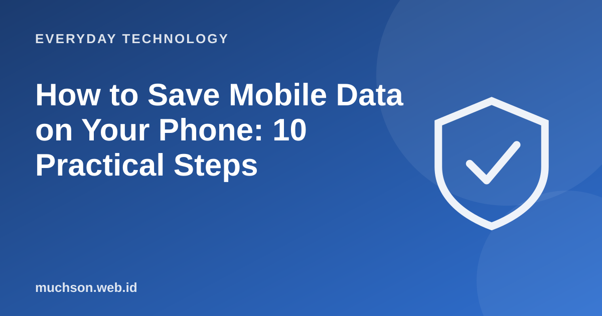

Home › Articles › Everyday Technology
Everyday TechnologyHow to Save Mobile Data on Your Phone: 10 Practical Steps
Data often runs out not because you browse a lot, but because of what runs behind the scenes: automatic updates, videos that play by themselves and backup uploads. Checking and setting these can save a great deal.

Step one: know which uses the most
Almost every phone has a menu of data usage per app. Open the network or mobile data settings, look at the order, and you will often find one or two apps that use far more than you expected. Start there.
Ten ways to save
Text description of the diagram
- Music (normal quality): 70 MB
- Social media: 150 MB
- 480p video: 500 MB
- HD video: 1500 MB
The biggest tip
Services that autoplay video or back up photos to the cloud are hidden data users. Making sure both run only on Wi-Fi often saves the most.
FAQ
Is data-saver mode safe to use?
Yes. It limits background activity and lowers content quality, sometimes with notifications slightly delayed.
Why does my data run out when I hardly use it?
Usually because of background apps, automatic updates, or tethering (sharing the internet) you were not aware of.
Does sharing a hotspot use a lot of data?
Yes, because other devices use your phone's data too, including large automatic updates.